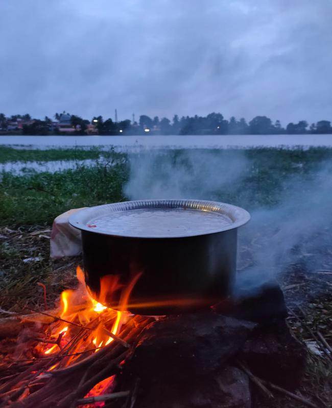
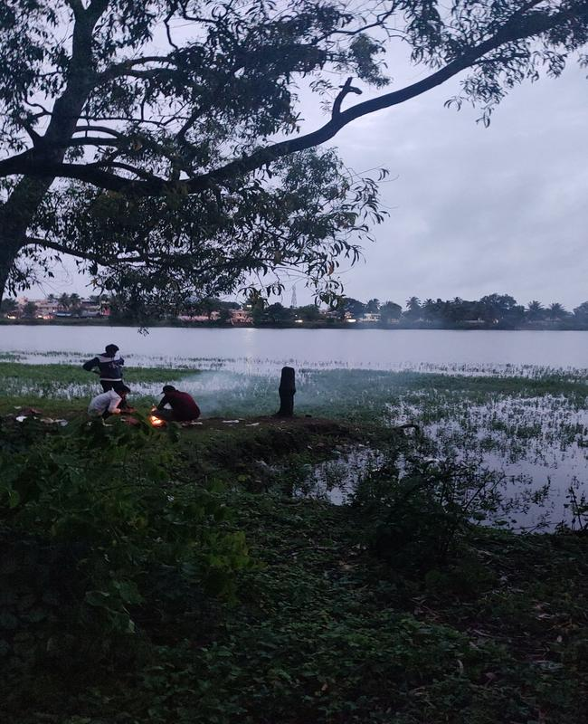
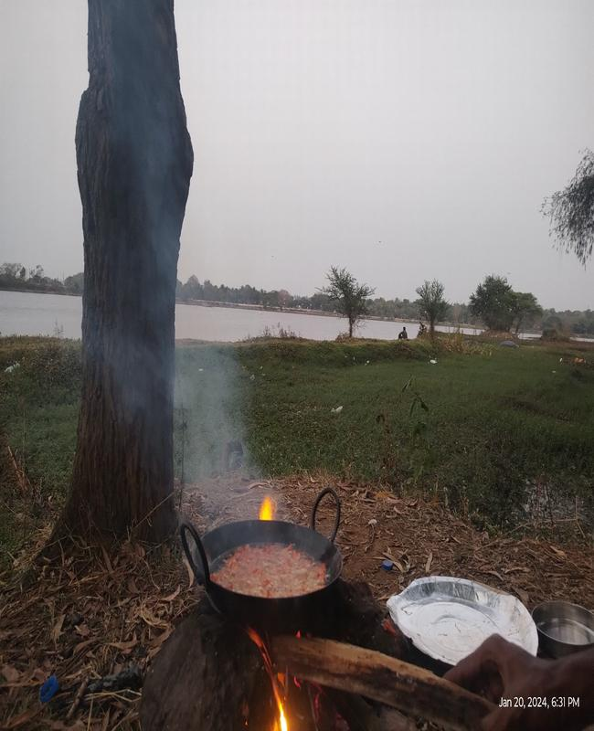

Lakeside Cooking Adventure
Last Updated: April 3, 2025
There’s something magical about cooking by the **lakeside**. The calm water, the gentle breeze, and the crackling sound of woodfire—it’s an experience that brings both relaxation and adventure. Whether you’re with friends, family, or just enjoying solitude, lakeside cooking is a perfect way to unwind.
Setting Up the Perfect Lakeside Cooking Spot
Finding the right spot is key. Choose a **shady area near the water**, away from strong winds. Bring a portable stove or go traditional with **firewood cooking**. The best part? Cooking under an open sky while enjoying the beauty of nature.
The Menu: Kebab and Egg Biryani
For this adventure, we prepared two **classic dishes** that are easy to cook outdoors and incredibly delicious:
🔥 Grilled Kebab
- Marinate **chicken or paneer** with yogurt, spices, and a hint of lemon.
- Skewer and grill over an open flame.
- Enjoy with **mint chutney** while the lake breeze enhances the flavors.
🍛 Egg Biryani
- Cook rice with saffron, spices, and fried onions.
- Add boiled eggs and mix well for a rich, aromatic biryani.
- Serve hot with **raita** and a scenic lakeside view.



The Experience
The best part of lakeside cooking is the **slow, immersive process**. As the food cooks, you enjoy the **changing colors of the sky**, the sound of water ripples, and the **simple joys of outdoor life**.
Tips for a Perfect Lakeside Cooking Experience
- 🔥 Always carry **eco-friendly utensils** and clean up after cooking.
- 💨 Choose a **wind-protected area** for smooth cooking.
- 🍃 Use **fresh local ingredients** for the best flavors.
- 🚀 Enjoy the **moment**—it's more about the experience than the speed.
Final Thoughts
Cooking by the lake is more than just a meal; it’s an **experience of connection—with food, nature, and people**. If you haven’t tried it yet, grab your supplies, find a quiet lakeside, and let the adventure begin!